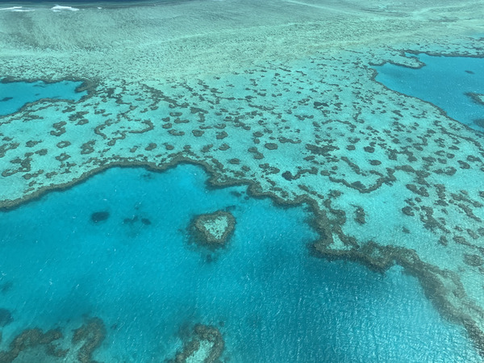

あなたにおすすめの旅行先は……
クイーンズランド（QLD）州
オーストラリア初心者で、コアラを抱っこしてみたいあなたにぴったりなエリア！
日本人に人気なゴールドコーストやケアンズといった海が綺麗な観光地では、 ホエールウォッチングやサーフィン、スカイダイビングなどアクティビティが体験できます。 新婚旅行先としても人気な、グレートバリアリーフが広がる「ハミルトン島」では、 白い砂浜で非日常でゆっくりとした時間が過ごせるなど魅力満載です。
自然だけでなく、第三の都市ブリスベンでは、美味しいご飯や街歩きが楽しめますよ♪
ビクトリア（VIC）州
ヨーロッパの街並みが楽しめるメルボルンは、カフェの聖地！ どこに行っても美味しいコーヒーとパティスリーが楽しめます。
また世界一のクロワッサンと称された「LUNE（ルーン）」本店もありますよ！ 世界で最も美しい図書館に常にランクインする「ブリスベン州立図書館」もあるので、 街散策がおすすめです。
少しシティーから離れ、車を走らせると、世界一小さい「フェアリーペンギン」が見られる フィリップアイランドや、70以上ものワイナリーが立ち並ぶ「ヤラヴァレー」、 壮大な景色の中ドライブが楽しめる海岸道路グレートオーシャンロード」など、 見どころがたくさんあります。
ニューサウスウェールズ（NSW）州
シドニーが位置するこの州では、オーストラリア初めての方には最適なエリアです。
最も有名な観光地「オペラハウス」をはじめ、カジノやショッピングが楽しめる 「ダーリ ングハーバー」、
レトロな街並みが色濃く残り、週末はマーケットも開催される 「ザ・ロックス」、
シドニー唯一の遊園地でレトロな「ルナ・パーク」など、シティだけでも十分楽しめます。シティにはトラム、電車、バスが通っているので、レンタカーも必要なし！
少し自然も楽しみたい方にはバスで約30分で行けるボンダイ・ビーチや、 市街地から車で約2時間の世界遺産のブルーマウンテンズ国立公園もおすすめです。
ノーザンテリトリー（NT）州
世界の中心で愛を叫ぶならノーザンテリトリー州に位置する一枚岩「ウルル／エアーズロック」 へ行くしかありません！
現在は登頂禁止になっていますが、遠目から見る朝日や夕日影で色が変わっていく姿は圧巻です。
ちなみに麓にはラクダファームがあり、ウルル周辺をラクダに乗って楽しむツアーも 開催されていますよ。
さらに周辺には「カタジュタ」や「キングスキャニオン」といったハイキングできる絶景もあります。 雄大な景色を拝みながら、贅沢食事を楽しみ、素敵なホテルでゆったりと非日常を 過ごしてみませんか？
時期は4、5月（秋）、9～11月（春）がおすすめです。
南オーストラリア（SA）州
ヨーロッパ調の街並みやワイン、大自然を存分に味わえる穴場的な場所が南オーストラリアです。
州都のアデレードは、街の綺麗さや治安の良さ、住みやすさから 「世界で最も住みやすい都市」世界3位に選出されています。
コンパクトな街ですが、市民の台所「アデレード中央市場（Central Market）」や入場無料で楽しめる美術館・博物館は必見です。
また南オーストラリアに来たらぜひ車を借りて、ワイナリー巡りを楽しんでみてください。 世界的に有名なバロッサ・バレー（Barossa Valley）やマクラーレン・ベール （McLaren Vale）、アデレード・ヒルズ（Adelaide Hills）など、 有名なワイナリーエリアがひしめいていますよ。
さらに、手付かずな自然が残り、野生動物を見るのに最適なカンガルー島もあり、 きっと何度も訪れたくなるはず！
タスマニア（TAS）州
オーストラリアの秘境・タスマニアは、島全体のほぼ30％が国立公園に指定され、 そのほとんどが世界自然遺産にも指定された、まさに手付かずの自然の宝庫。
WMO（世界気象機関）によると「世界で最も空気と水がきれいな場所」とされているんです。
style="text-align:center"綺麗な水のおかげで、ワインや牡蠣がとっても美味しいですよ。
またタスマニアではカンガルー、ワラビーはもちろん、フェアリーペンギン、ウォンバット、タスマニアデビル、 ハリモグラ、カモノハシなどに出会えるかもしれません。
ジブリ好きにはたまらない、魔女の宅急便のキキが働くパン屋のモデルになったとされるお店もあるので、 ぜひ立ち寄ってみてくださいね
西オーストラリア（WA）州
オーストラリアの国土の3分の1の広さを誇る西オーストラリア州は、 オーストラリアの魅力を凝縮したかのような見どころ満載な場所です！
パースから北へ580kmの場所にあるカルバリー国立公園内では、 4億年前から少しずつ堆積した峡谷の絶景を見る事ができますよ。
インド洋に沈む最高の夕日がみられるブルームの「ケーブルビーチ」では、ラクダライドも 外せません。
州都「パース」は、近代的で街がとても整備されています。 週末にオープンする「フリーマントル・マーケット」はお土産を探すのにもぴったりな場所です。
さらに、そこからフェリーで行ける「ロットネス島」には世界一幸せな動物として知られるstyle="text-align:center"クアッカワラビーにも出会えちゃいます